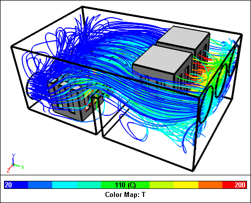

Electronics Cooling Fluid Comparison Study
Your choice of cooling fluid for an electronic device, can have a profound effect on its overall design and operation costs. So it's interesting to note that recent cooling strategies for computers include immersion of the entire computer in mineral oil as a cost-effective alternative to traditional air cooling. Which strategy do you pursue? Let CFD guide your decision - it is easy to switch the cooling fluid in a Caedium CFD simulation so you can make easy comparisons.
 Caedium CFD Electronics Cooling SimulationMineral oil streamlines colored by temperature
Caedium CFD Electronics Cooling SimulationMineral oil streamlines colored by temperature
Let's perform a study of an electronics package and compare the cooling performance of air, mineral oil, and (because this is the virtual world without risk of electric shock) water. I'll define the performance measure as the average temperature on the surface of the heat sinks, where the lower the temperature the better.
Model Building in Caedium
To represent our electronics package I used Caedium's geometry creation tools to construct a simple box with inlets (red), outlets (green), a baffle (blue), and heat sinks (gray).
Geometry Created in Caedium
The final flow volume consisted of:
- 1 volume
- 228 faces
- 544 edges
- 328 vertices
CFD Simulations Using Caedium RANS Flow
I used Caedium's intuitive drag and drop approach to define the physics (e.g., substance and boundary conditions), create the mesh, run each simulation and extract results.
Physics
I initially set air as the fluid and configured the simulation as incompressible, steady-state flow with heat transfer. For the heat sinks I specified a heat flux of 300 W/m2 as the temperature condition. For the inlets I set the normal surface speed as 0.05 m/s.
To assess the performance of each fluid I created a new result variable to use as a monitor that corresponded to an area-weighted average temperature:
Taverage = Sum(A.T) / Sum(A)
where A = area and T = temperature
After completing the first simulation using air I reconfigured and reran the simulation using the reference quantities for mineral oil and then water.
| Air | Mineral Oil | Water | |
| Specific Heat Capacity (Cp) J.kg-1.K-1 | 1005 | 1670 | 4183 |
| Thermal Expansion Coefficient (beta) K-1 | 0.00343 | 0.00064 | 0.000207 |
| Thermal Conductivity (k) W.m-1.K-1 | 0.0257 | 0.162 | 0.67 |
| Dynamic Viscosity (mu) Pa.s | 1.821e-5 | 0.2 | 0.001002 |
| Density (rho) kg.m-3 | 1.205 | 800 | 998.2 |
Mesh
- 223,286 tetrahedral volume elements
- 25,256 triangular face elements
Mesh Created in Caedium
Results
Air Streamlines Colored by Temperature
Mineral Oil Streamlines Colored by Temperature
Water Streamlines Colored by Temperature
Average Heat Sink Temperature per FluidLower temperature is better
Conclusion
The average temperature results clearly show that water and mineral oil cooling are superior to air cooling for this application. Of the two liquids, mineral oil is the clear winner, not in heat transfer terms, but because it is a good electrical insulator. The excellent fluid cooling characteristics of water are well known and that is why you'll find it used extensively in mechanical cooling applications.
Feedback
Questions? Ideas? Problems?

Comments
Baffles
Does Caedium support the use of baffles (porous, conducting, etc). Also the use of convective heat transfer coefficients?
Baffles = zero thickness
Caedium supports zero-thickness porous media, fans, and walls. Caedium does not currently support shell conduction.